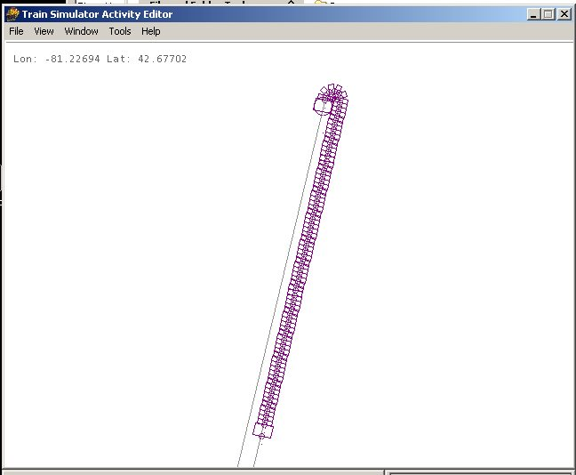

Constructing an Incline Railway
by Wayne Campbell
Here’s a project that may interest route builders.

This Inclined Railway was located at the west end of the L&PS’s Lake Erie beach terminal in Port Stanley ( Ontario, Canada ). It’s a well known structure and had to be included in my route. At first I considered a static model – and then I thought, maybe I could animate the cars so you could watch them go up and down. But then, why keep things simple – I finally decide I wanted to make the cars into a type of locomotive so that the operator could actually take a ride on the incline. I ended up with a model where the operator can ride in either car, and fully control the lifthouse to raise or lower the car on the incline.
The trick was – how do I make one car come down while the other goes up! For those who want to give it a try, here are the essentials:
- The two tracks are actually connected at the top by six invisible curved track sections with a 1.5 meter radius and 30 degree angle. I custom made these sections and if I ever distribute the route, I’ll have to get the track sections added to the official TSECTION.DAT file.
- The two cars are connected by a 'train' of 1 meter long rope-shaped 'cars'. I built a model of a 1 meter long length of rope ( cable ) and wrote a .WAG file for it so that MSTS would think it was a railroad car. Then I could use the AE to place a consist consiting of the two cars joined by the correct number of rope sections. This is the secret to having the cars pass each other in the middle of the incline.

- Finally the two cars were built - one as an electric locomotive and the other as a passenger car. That way the '5' and '3' view is in the second car and the '1' and '2' views are in the first car. I adjusted the .ENG file so it had only two throttle positions and two brake positions to simplify the operation. I created a cab view from inside the first car. I also adjusted the physics to give the 'locomotive' car plenty of power and traction for climbing the hill.
This approach also allows the Inclined Railway consist to operate as an AI train that runs in the distance when the scene is viewed from L&PS trains at the beach terminal. The result is a unique model that is a lot of fun to operate.
I hope someone gives this a try on their own route.
I hope you find this helpful.
Wayne
Building the L & PS